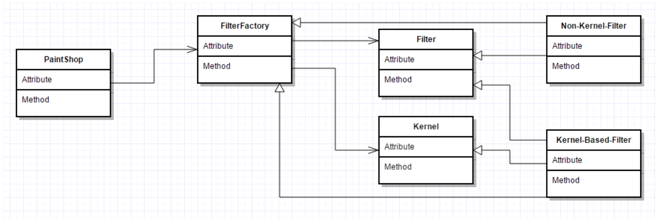

Designing with scale and simplicity in mind
When designing this
program we had 2 major design philosophies in mind
1) Scalability
2) Simplicity
From the start we knew our project was
going to be big, so scalability was
vital. Anything we implemented needed to be able to grow easily. Because of
this we strived to develop factory like implementations of the major functions
of the program. Our program implements a tool factory and a filter
factory. This allows for easy additions
of more tools and filters to the program.
There are also many functions we had to
implement that didn’t exactly mesh well with a factory approach. To conquer functions like saving and loading or undo redo,
we approached these situations with a simple mindset. Saving and loading was an
ideal function to build into its own class and include that class where needed.
Undo redo was a rather small function and didn’t exactly require a class
dedicated for it, so it was logical and simpler for us to implement it directly
in medimage and photoshop.

This UML diagram represents the filter
factory relationship to paintshop/photoshop.
The tool factory is very similar to
this design. All other major functions of the program are implemented simply
and are no more than one layer of abstraction above the function they are implemented
in.